▲ 선운산 도솔천 계곡을 따라 이어지는 단풍 풍경 사진=한국관광공사
선운사 단풍은 언제쯤 가야 가장 붉을까. 산림청은 2026년 단풍 절정이 10월 하순 전국으로 번지고 내장산은 11월 4일쯤 절정을 맞을 것으로 예측했다. 선운산은 이 예측표에 따로 오르지 않아, 이 글은 같은 전북권인 내장산 예상 시기를 참고한 대략적인 시기와 함께 선운사·도솔암 산책, 고창읍성 성곽 걷기를 한 번에 묶은 가을 하루 코스를 정리했다.
꽃무릇 시기의 선운산 이야기는 영광 불갑사 꽃무릇 기사에서 다뤘다. 여기서는 꽃무릇이 아니라 단풍과 읍성에 초점을 맞춘다. 전국 단풍 예측 전체는 산림청 2026 단풍 절정 예측지도 기사를 함께 보면 된다.
▲ 도솔천 계곡을 따라 이어지는 단풍 풍경 사진=한국관광공사
1. "선운사 단풍, 지금 가면 이를까" — 절정 시기 가늠하기
산림청이 9월 22일 발표한 '2026년 단풍절정 예측지도'에 따르면 올가을 단풍은 10월 초 강원 북부 산지에서 시작해 10월 하순 전국적으로 절정을 이룰 전망이다. 산림청은 산의 약 50%가 물드는 시점을 절정으로 본다. 주요 산별 예상 절정일은 설악산 10월 20일, 속리산 10월 28일, 내장산 11월 4일, 한라산 11월 6일이다. 수종별로는 은행나무가 10월 30일, 단풍나무·참나무류가 10월 31일로 제시됐다(전국 대표 수종 기준으로, 선운산 개별 예측이 아니다).
| 산 | 예상 절정일 | 비고 |
|---|---|---|
| 설악산 | 10월 20일 | 산림청 예측지도 |
| 속리산 | 10월 28일 | 산림청 예측지도 |
| 내장산(전북 정읍) | 11월 4일 | 산림청 예측지도, 전북권 참고 지표 |
| 한라산 | 11월 6일 | 산림청 예측지도 |
| 선운산(고창) | 예측표 미포함 | 내장산 예상일과 비슷한 11월 초·중순으로 추정 — 현장·고창군 안내 확인 필요 |
참고로 2025년 10월 말 보도에서는 선운산 도솔천 산책로의 단풍이 11월 12일까지 절정을 이룰 것으로 전해졌다. 올해 예측이 지난 5년 평균보다 약 0.8일 늦다는 분석과 함께 보면, 11월 첫째~둘째 주 주말이 후보라는 정도로 읽을 수 있다. 다만 이는 공식 확정이 아니라 추정이며, 가을 기온과 강수에 따라 일주일 안팎 달라질 수 있다.
산림청 예측지도 원문은 공식 발표 자료·보도에서 확인할 수 있다. 단풍 예측 보도 바로가기
2. 선운사 입구부터 경내까지 — 입장료·주차·기본 정보
선운사는 전북특별자치도 고창군 아산면 선운사로 250에 있는 선운산도립공원의 중심 사찰이다. 고창군의 관광 안내에 따르면 사찰은 백제 위덕왕 24년(577)에 검단선사가 창건했다는 설이 정설로 받아들여진다. 도솔산 북쪽 기슭에 자리하며 전북의 2대 본사 중 하나로 소개된다.
| 항목 | 내용 | 근거 |
|---|---|---|
| 주소 | 전북특별자치도 고창군 아산면 선운사로 250 | 고창군 관광 안내 |
| 입장료 | 고창군 '관광지 입장료' 표(개인·단체 모두 무료)와 고창군 '선운산도립공원' 안내(이용요금 무료, 문화재 관람료 무료)가 일치 | 고창군 공식 안내 |
| 참고: 상충 문구 | 고창군 관광 사이트 '선운사' 상세 페이지에는 옛 문화재 관람료(어른 4,000원 등) 문구가 그대로 남아 있음. 최신 입장료 표·도립공원 안내와 다르므로 옛 문구로 보인다 | 표기 정리 미비로 추정 |
| 운영시간 | 선운사 06:00~19:00 연중무휴, 도솔계곡 일출~일몰(한국관광공사 TourAPI), 도솔암 09:00~18:00(같은 자료) | 한국관광공사 |
| 주차료 | 고창군은 도립공원 이용요금을 '무료'로 안내. 2019년 2월 12일부터 주차료(시설사용료) 면제로 보도됨 | 고창군, 투어코리아 |
| 문의 | 선운사 063-561-1422(한국관광공사), 선운산도립공원 관리소 063-560-8681·문화관광안내소 063-560-8687(한국관광공사), 063-560-8683(고창군) | 번호가 자료마다 달라 통화 전 확인 권장 |
| 65세 이상 | 선운산도립공원·고창읍성 등 입장료 무료(신분증) | 고창군 입장료 표 하단 안내 |
입장료와 감면 규정은 고창군 공식 홈페이지에서 확인할 수 있고, 도립공원 이용요금은 군 관광 사이트의 선운산도립공원 안내에도 적혀 있다. 고창군 관광지 입장료 바로가기
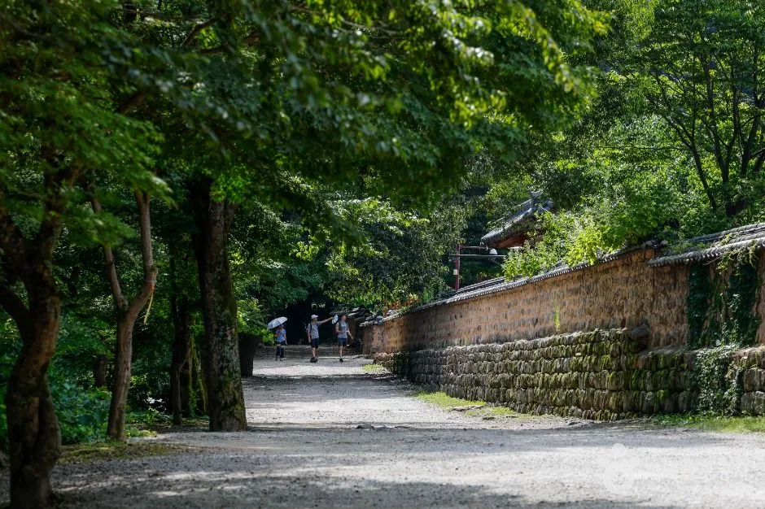
▲ 선운사로 이어지는 숲길과 돌담. 경내에 들어서기 전부터 걷는 재미가 있다 사진=한국관광공사
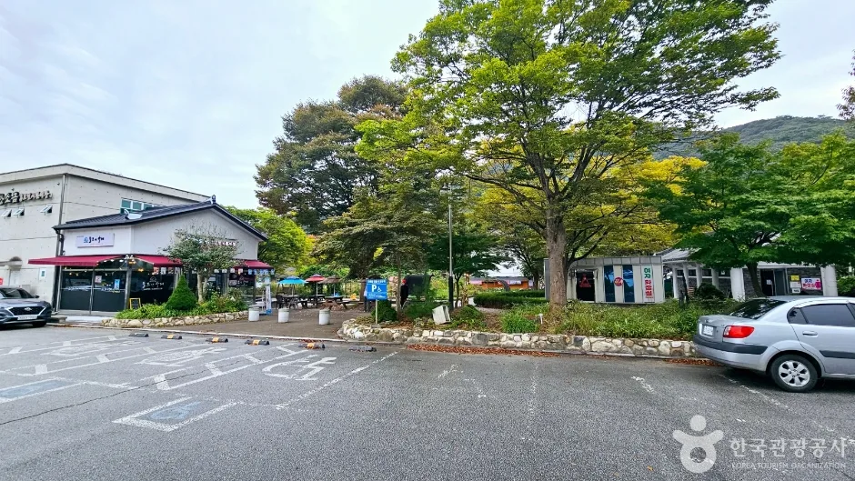
▲ 선운사 입구 쪽 주차 공간. 주말 단풍철에는 이른 시간에 만차가 될 수 있다 사진=한국관광공사
| 구분 | 내용 |
|---|---|
| 보물 | 선운사 대웅전, 금동보살좌상, 지장보살좌상, 참당암 대웅전, 도솔암 마애불 등 |
| 천연기념물 | 동백나무숲, 장사송, 송악 |
| 지방문화재 | 만세루, 백파율사비(추사 글씨의 대표작으로 소개), 영산전 목조삼존불상, 육층석탑 등 |
| 지정 시기 | 1979년 도립공원으로 지정, 도솔천 계곡 일원은 명승(한국관광공사 여행기사) |
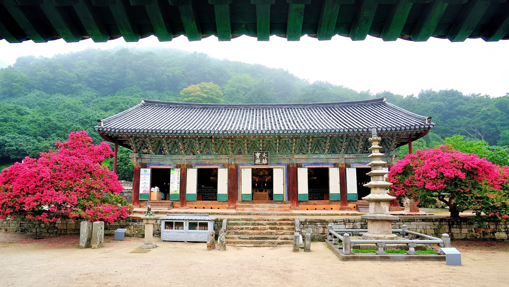
▲ 선운사 경내의 전각과 석탑(고창군 제공 사진) 사진=고창군
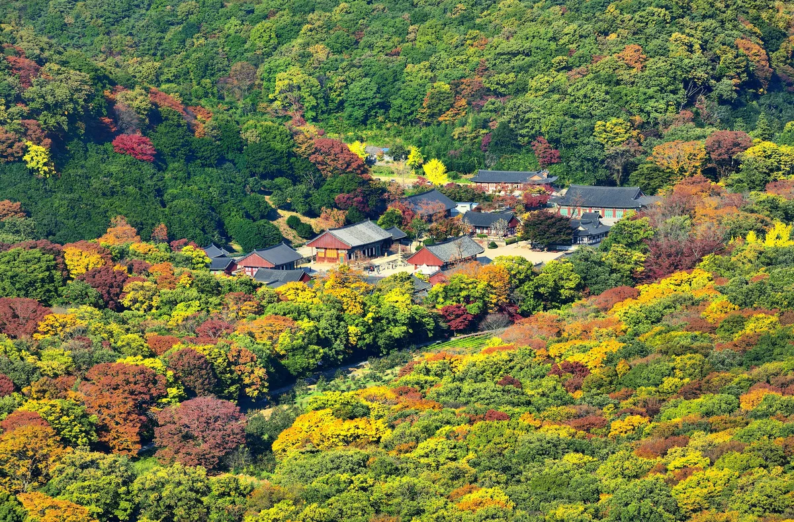
▲ 단풍이 물든 선운사 일대 전경(고창군 제공 사진) 사진=고창군
경내에는 만세루를 중심으로 대웅보전·관음전·영산전·팔상전·명부전 등 10여 채의 전각이 있고, 대웅보전 뒤편에는 천연기념물로 지정된 동백나무 숲이 있다. 한국관광공사 여행기사에 따르면 선운사 입구의 송악, 경내의 동백나무 숲, 도솔암 장사송이 이 사찰을 대표하는 천연기념물이다. 동백은 단풍철에 꽃이 피지 않지만 짙은 잎이 단풍과 대비를 이룬다.
3. 도솔천 따라 도솔암까지 — 3.2km 단풍 산책길
선운사에서 도솔암까지는 약 3.2km, 걸어서 1시간 정도라고 한국관광공사 여행기사가 소개한다. 길은 흙길이고 평탄해 남녀노소 다녀올 수 있는 것으로 알려져 있다. 왕복하면 걷는 시간만 2시간 안팎을 잡아야 한다. 이 구간이 선운산 단풍의 하이라이트다.
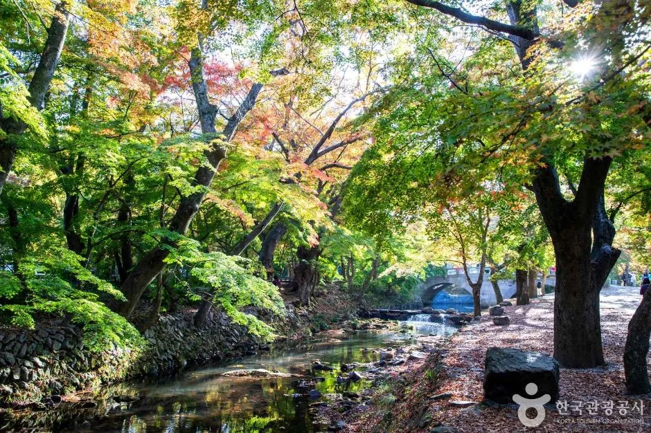
▲ 도솔천 물길을 따라 단풍이 이어지는 산책 구간 사진=한국관광공사
| 순서 | 지점 | 메모 |
|---|---|---|
| 1 | 선운사 경내 | 천왕문·만세루·대웅보전, 동백나무 숲 |
| 2 | 진흥굴 | 선운사에서 2km가 채 안 되는 지점, 신라 진흥왕 수도 전설이 전해짐 |
| 3 | 도솔암 장사송 | 천연기념물 제354호, 수령 약 600년으로 소개 |
| 4 | 도솔암·내원궁 | 내원궁에 금동지장보살좌상(보물 제280호) |
| 5 | 마애불 | 높이 17m, 동불암지 마애여래좌상(보물 제1200호) |
| 6 | 천마봉 방향 전망 | 오르는 길 약 10분, 암벽과 선운산 풍경 |
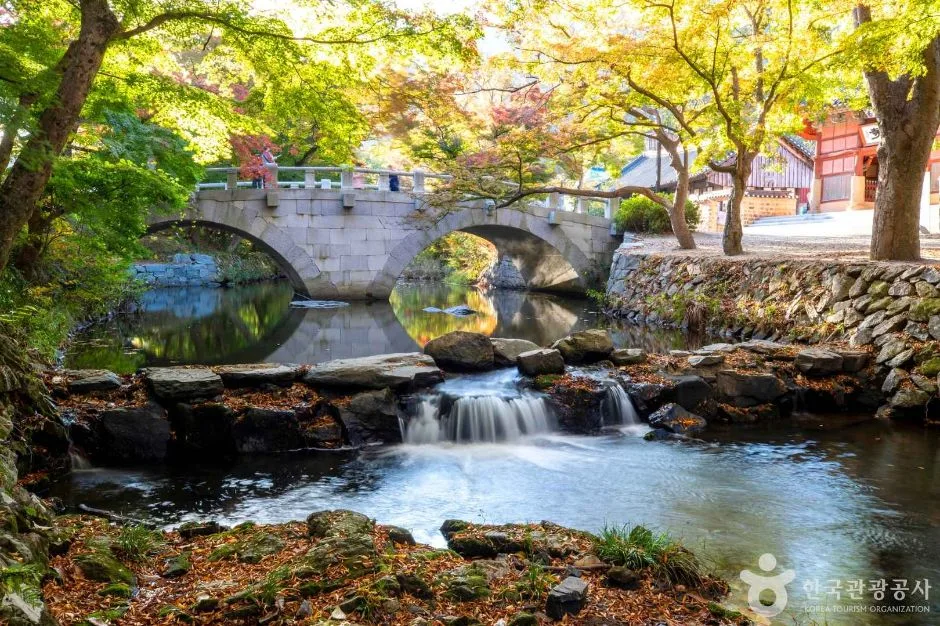
▲ 선운사 인근 계곡변 단풍. 물에 비친 색이 곱다는 평이 많다 사진=한국관광공사
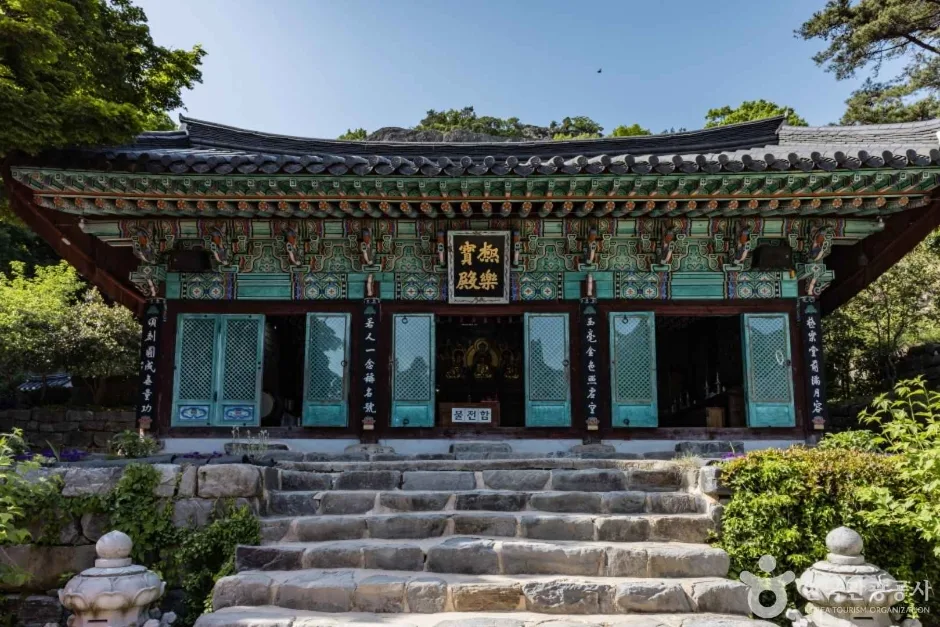
▲ 도솔암 일대의 전각. 이곳에서 위쪽 절벽의 마애불을 볼 수 있다 사진=한국관광공사
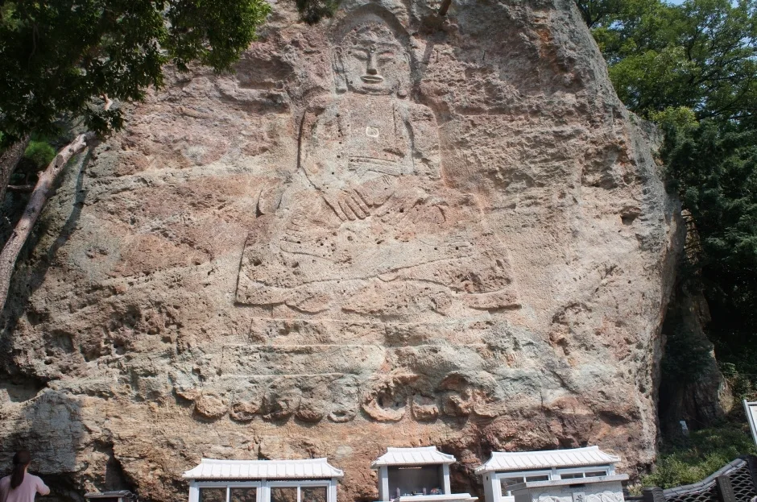
▲ 암벽에 새겨진 마애불. 한국관광공사 여행기사는 도솔암 마애불(보물 제1200호)을 높이 17m로 소개한다 사진=한국관광공사
도솔암까지 왔다면 천마봉 방향으로 10분쯤 더 오르는 것이 좋다. 선운산의 수직 암벽과 마애불 일대를 내려다볼 수 있다는 것이 한국관광공사 여행기사의 소개다. 체력이 남는다면 배맨바위를 거쳐 낙조대까지 가는 코스도 있지만, 해가 빨리 지는 11월에는 하산 시간을 반드시 계산해야 한다.
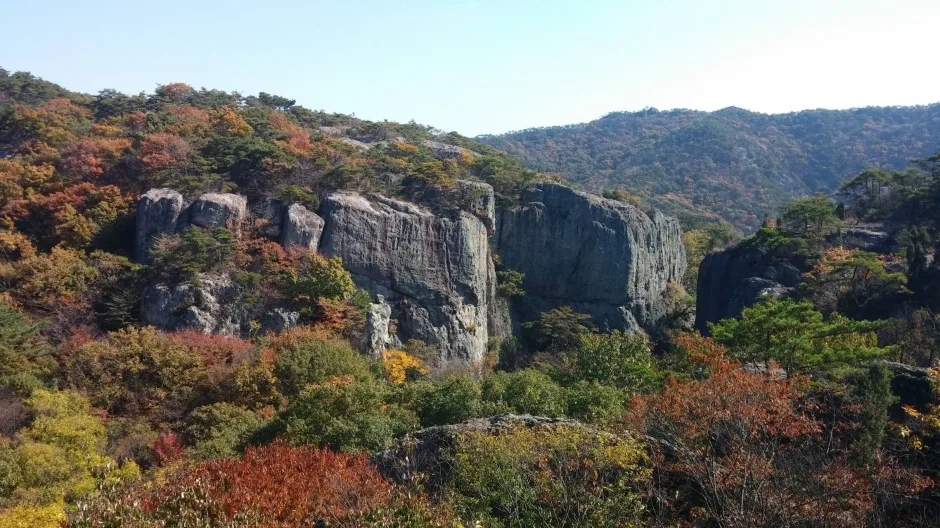
▲ 선운산 일대의 암봉과 가을 숲 사진=한국관광공사
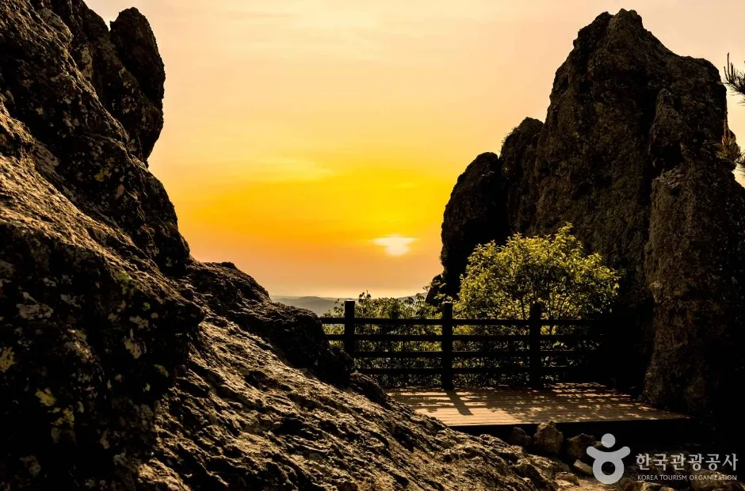
▲ 선운산 낙조대에서 본 해 질 녘 하늘 사진=한국관광공사
도솔암 근처에는 참당암(도솔길 194-77)도 있다. 고창군 안내에 따르면 참당암 대웅전은 보물이고, 옛날에는 골짜기마다 89개 암자가 있었다고 전해진다. 선운사와 도솔암을 오가는 길에 시간이 남을 때 들러볼 만하지만, 접근 방식과 소요 시간은 현장 안내를 확인해야 한다.
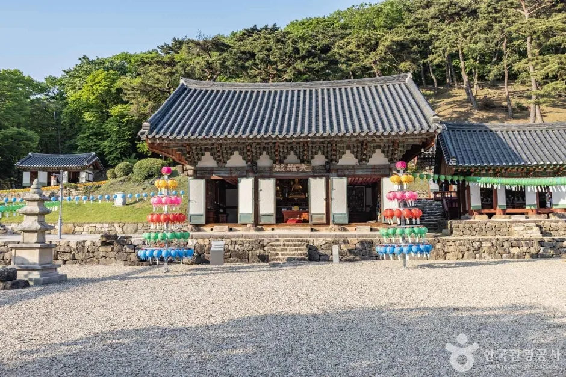
▲ 선운산 자락의 참당암 전각 사진=한국관광공사
📍 산책 팁
도솔암까지 흙길이 평탄하다고 해도 비 온 뒤에는 미끄러울 수 있어 운동화 착용이 좋다. 사찰 경내는 예절이 필요한 공간이라 큰 소리 대화·드론 촬영 등은 삼가는 것이 좋다. 야간·일몰 후 출입은 제한될 수 있으므로 오후 일찍 도착해 산책을 마치는 일정이 안전하다.
4. 고창읍성, 성곽 한 바퀴 — 운영시간·요금·주차
고창읍성은 조선 세종 32년(1450)부터 단종 원년(1453)까지 전라좌우도 19개 군·현이 구간별로 나눠 쌓은 것으로 고창군 관광 안내는 소개한다. 성돌에 새겨진 글자와 상량문 등을 근거로 1453년 계유년에 축성된 것이 확실하다는 설명이다. 한국관광공사 여행기사에 따르면 성 둘레는 1,684m, 높이 4~6m이고 사적으로 지정돼 있다. 산을 끼고 쌓아 원형이 잘 보존됐다는 점이 특징이다. 소요 시간을 공식 자료로 확인하지는 못했지만, 둘레 1.7km 남짓이라 성곽 길만 걸으면 30~40분, 성안 관아 건물까지 보면 한 시간 이상 잡는 것이 보통이다(추정).
| 항목 | 내용 |
|---|---|
| 주소 | 전북특별자치도 고창군 고창읍 모양성로 1 (읍내리 산 9) |
| 운영시간 | 05:00~22:00, 연중무휴 |
| 입장료 | 어른 3,000원 / 청소년·군인 2,000원 / 어린이(초등) 1,500원 |
| 감면 | 65세 이상(신분증), 고창군민(신분증) 무료 |
| 주차 | 고창읍 읍내리 182-6, 버스 포함 약 100대 수용 (요금은 공식 페이지에 명시되지 않음, 일부 자료는 무료로 표기 — 현장 확인) |
| 문의 | 매표소 063-560-8068, 관광안내 063-560-8067 |
운영시간과 입장료는 고창군 공식 관광 안내에서 확인할 수 있다. 고창읍성 공식 안내 바로가기
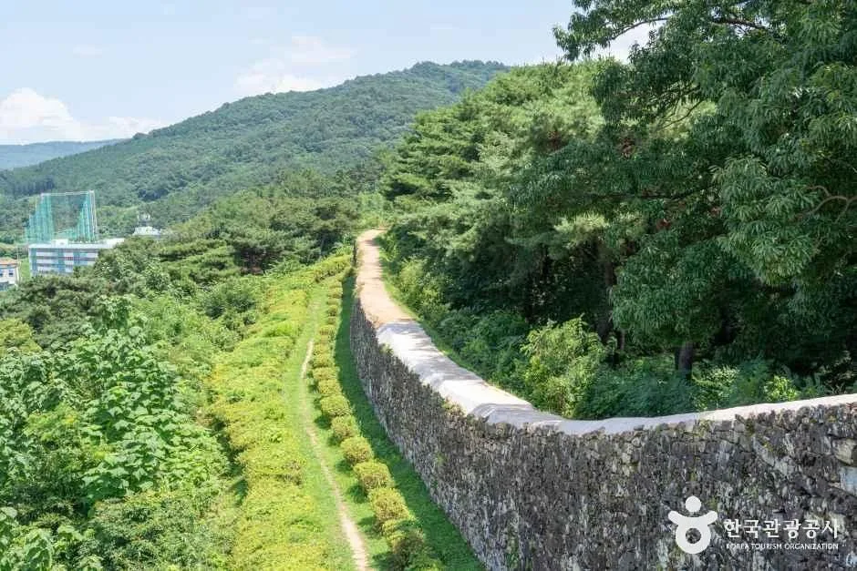
▲ 산자락을 따라 이어지는 고창읍성 성벽 사진=한국관광공사
고창읍성에는 답성놀이라는 풍속이 전해진다. 고창군 안내에 따르면 손바닥만 한 돌을 머리에 이고 성을 한 바퀴 돌면 다릿병이 낫고, 두 바퀴 돌면 무병장수하며, 세 바퀴 돌면 극락승천한다는 이야기다. 오늘날 관광객이 굳이 돌을 이고 돌 필요는 없지만, 성곽 위를 걸으며 이 이야기를 떠올려 보는 것도 재미다.
| 볼거리 | 메모 |
|---|---|
| 북문 공북루 | 성의 정문. 성문 앞에 옹성을 쌓고 그 위에 총구멍이 있는 여장을 둔 방어 구조 |
| 관아 건물 | 동헌·객사·옥사 등 복원 건물. 영화 〈사도〉·〈화정〉·드라마 〈미스터 션샤인〉 촬영지로 소개됨 |
| 치성 | 북문 쪽 첫 치성은 3·1운동 때 만세를 외친 현장으로 소개됨 |
| 맹종죽림 | 읍성 서남쪽 대나무 숲, 일제강점기에 중국에서 들여온 맹종죽으로 조성되었다고 소개됨 |
| 신재효 고택 | 고창읍성 매표소 바로 앞, 국가민속문화재. 옆에 고창판소리박물관 |
| 고창전통시장 | 끝자리 3·8일 오일장 |
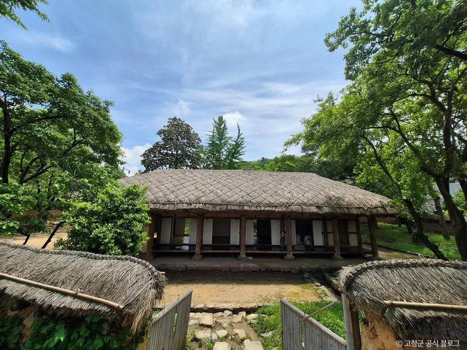
▲ 고창읍성 매표소 바로 앞에 있는 신재효 고택 사진=한국관광공사
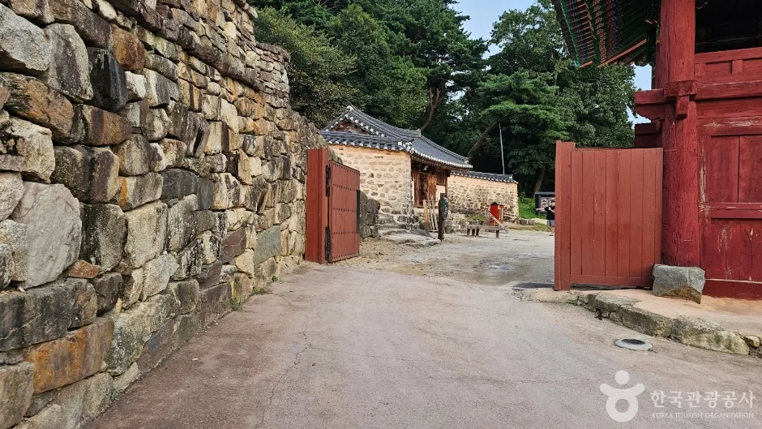
▲ 고창읍성 성문 부근. 읍성 주 출입구 방향의 길이다 사진=한국관광공사
한국관광공사 TourAPI에는 고창읍성 맹종죽림(고창읍 읍내리)도 별도 관광지로 등록돼 있다. 대나무 숲 사진으로 소개되는 곳이며, 성곽 걷기 후 짧게 들러 볼 만하다. 다만 정확한 위치와 개방 여부는 읍성 매표소에서 확인하는 것이 안전하다.
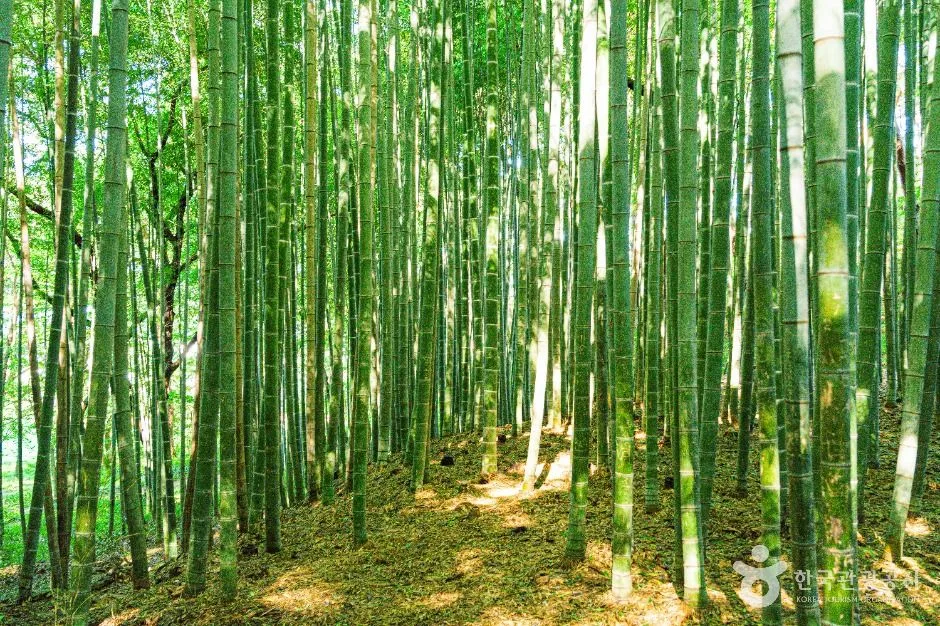
▲ 고창읍성 맹종죽림으로 소개되는 대나무 숲 사진=한국관광공사
5. 10월 15~19일 모양성제와 겹치면 — 혼잡 대비
중도일보·아시아경제 보도에 따르면 제53회 고창모양성제는 2026년 10월 15일부터 19일까지 5일간 고창읍성 일원에서 열린다. 답성놀이·거리 퍼레이드·모양성 유람단 등이 준비됐고, 블랙이글스 에어쇼도 예고돼 있다. 이 시기는 선운산 단풍 절정(11월 초·중순 추정)보다 이르다. 단풍과 읍성을 같은 날 묶고 싶다면 축제 기간을 피하는 것이 한적하고, 축제가 목적이라면 읍성 주차장 약 100대의 수용력이 부족할 수 있음을 염두에 둬야 한다.
✅ 시기별 추천
· 10월 15~19일: 모양성제 중심 — 읍성 혼잡, 선운산은 단풍 이른 편으로 추정
· 11월 첫째~둘째 주말: 선운산 단풍 후보 — 내장산 예상 절정일(11월 4일) 전후 참고
· 평일·오전: 주차 여유와 사진 촬영에 유리
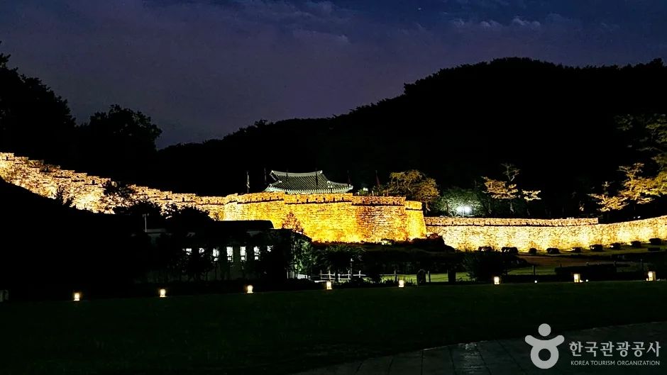
▲ 야간 조명이 들어온 고창읍성. 운영시간이 22시까지라 저녁까지 이어 볼 수 있다 사진=한국관광공사
6. 하루 코스 짜기 — 선운사 → 도솔암 → 고창읍성
| 시간대 | 일정 | 비고 |
|---|---|---|
| 09:00~09:30 | 선운산도립공원 도착, 주차 | 주말은 이른 도착 권장 |
| 09:30~12:30 | 선운사 경내 → 도솔천 → 도솔암 왕복 | 왕복 걷기 2시간 안팎 + 관람·촬영 |
| 12:30~14:00 | 인근 식당에서 점심, 고창 이동 | 고창군 관광 안내의 식당 목록 참고 |
| 14:00~16:00 | 고창읍성 도착, 성곽 한 바퀴 | 약 1시간 + 여유 |
| 16:00~17:30 | 맹종죽림·읍성 안 산책, 귀가 | 야간 조명은 늦은 시간에 |
선운사와 고창읍성은 같은 고창군이지만 서로 거리가 있다. 고창군은 두 곳을 오가는 시외버스·관광지 교통 정보를 별도 안내하고 있으니, 자가용이 아니라면 고창군 '관광지 교통정보'를 확인하는 것이 좋다. 차로 이동할 때 소요 시간은 내비게이션으로 확인해야 한다.
7. 운전·준비물 체크
✅ 출발 전 체크
· 서해안고속도로에서 고창읍성은 고창 톨게이트(한국관광공사 안내 기준), 선운사는 선운산 방면 나들목이 안내되나 자료마다 명칭 표기가 달라 내비게이션으로 확인
· 고창군에는 시외버스 안내·관광지 교통정보 메뉴가 있고, 고창문화터미널에서 고창읍성까지는 도보 약 25분(한국관광공사 여행기사)
· 선운산은 산악 지형이라 오후 4시 이후 산길 하산은 서두르는 것이 안전 (11월 일몰이 빠르다)
· 도솔암 왕복을 위해 물·간식·편한 신발
· 65세 이상·고창군민은 신분증 지참 (입장료 감면)
· 기온이 낮아지는 시기라 겉옷 준비, 우천 시 흙길 미끄러움 주의
8. 불갑사 꽃무릇·순창 강천산과 비교하면
선운사는 꽃무릇(9월)과 단풍(11월 전후)을 다른 시기에 나눠 즐길 수 있는 곳이다. 꽃무릇 위주라면 영광 불갑사와 비교하는 편이 낫고, 같은 전북권에서 단풍만 노린다면 순창 강천산 단풍 코스도 후보다. 선운산은 단풍에 더해 마애불·장사송 같은 문화유산과 읍성 성곽 걷기까지 하루에 묶을 수 있다는 점이 차별점이다.
9. 요약
산림청 예측상 2026년 내장산 단풍 절정은 11월 4일이며 선운산은 예측표에 없어 11월 초·중순 전후로 추정된다. 선운사·선운산도립공원은 고창군 안내상 무료(문화재 관람료 포함), 주차료는 2019년부터 면제된 것으로 보도됐다. 선운사~도솔암은 약 3.2km·1시간 안팎의 평탄한 흙길로, 장사송·마애불(보물 제1200호)을 볼 수 있다.
고창읍성은 05:00~22:00 연중무휴, 어른 3,000원이고 성곽 둘레는 1,684m다. 모양성제(10월 15~19일)와 겹치면 혼잡할 수 있으니 시기를 고르고, 산길 하산은 일몰 전에 마치는 일정을 잡자.